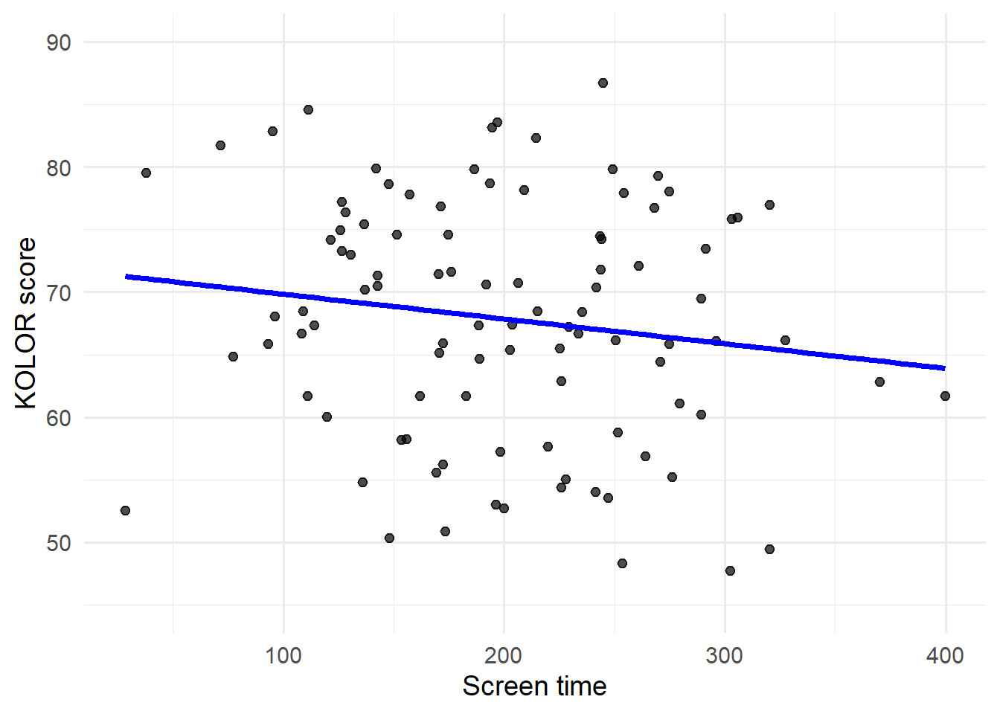
5 Hypothesis Testing
Learning Objectives
By the end of this chapter, you should be able to:
- Explain the purpose of hypothesis testing and why it is needed to decide whether an observed relationship is likely to be real or due to random chance.
- Define and distinguish between a null hypothesis and an alternative hypothesis in the context of regression analysis.
- Interpret regression output to determine whether a predictor provides evidence of a statistically significant relationship with an outcome.
- Use the critical value method, p-value method and confidence interval method to make and justify decisions about rejecting or failing to reject the null hypothesis.

5.1 Introduction
Last time we learnt how to build models to estimate things about a population. Specifically, we explored regression models, which allow us to quantify relationships between variables and generate predictions based on observed data. With tools such as covariance, correlation, and simple linear regression, we can now construct models that summarise how an outcome changes as predictors change.
But building a model is only the first step. Once we have a regression line or an estimated effect, a natural question follows:
is this relationship real, or could it simply be due to random chance in our sample?
In other words, whilst we now know how to construct these models, the deeper question becomes: can we make reliable conclusions from them?
This is where hypothesis testing, and the focus for this week, comes in.
Class Experiment
Before diving into the formal ideas, we will explore one concrete example throughout this chapter. It’s a simple question — one you can respond to in class:
Is there a relationship between how much time you spend on your phone and your performance on a colour-perception test?
The Data
For each student, we record:
- Phone usage: average minutes of screen time last week (most modern phones can check this quite quickly)
- KOLOR test score: We will do this test in the lecture (link here)
The intuition
Imagine the regression line for students in this class shows a negative slope: i.e. more screen time is associated with worse KOLOR performance.
At this moment, we can already ask our central questions:
Could this slope just be random noise?
Or is the relationship consistent enough in our data that we would expect it to appear again if we repeated the study?
By the end of this Chapter, you’ll be able to answer the bigger question: How do we decide if an observed effect is “real”?
5.2 Introduction to hypotheses
Before we can formally test whether a relationship is “real” or just random noise, we first need a structured way to express the competing ideas we want to evaluate. This structure is the foundation of all statistical testing and begins with two statements:
- a null hypothesis
- an alternative hypothesis
These are not random guesses, nor are they predictions. They are carefully defined statements about how the world might work. Every statistical test compares these two possibilities.
A hypothesis is simply a claim about a population. Not the sample we collected (see Chapter 3), but the entire population we care about. For example, based on our KOLOR data set, we might believe:
Students who spend more time on their phones tend to score lower on the KOLOR test.
But that belief is just a conjecture. A hypothesis test gives us a systematic way to evaluate that conjecture using data. To do this, we first define our two hypotheses.
The null hypothesis, written as \(H_0\), represents:
The assumption of “no effect,” “no difference,” or “nothing interesting happening.”
It is the default position—the claim we assume is true unless the evidence strongly contradicts it. In the context of our KOLOR example, we might say:
\(H_0\): There is no relationship between phone usage and KOLOR score in the population.
Translated into regression language:
\(H_0\): The true slope (β₁) = 0
If \(H_0\) is true, any trend we see in our sample is just random variation, not a meaningful pattern. The null is not meant to be exciting. It is designed to be challenged, not believed.
The alternative hypothesis, written as \(H_1\), represents:
The effect we believe might be present — the idea we want evidence for.
It is the scientific claim we are trying to support with data. For our example:
\(H_1\): There is a relationship between phone usage and KOLOR score.
Translated into regression language:
\(H_1\): The true slope (β₁) ≠ 0
This is called a two-sided alternative, because it allows the slope to be:
- positive (more phone time → higher KOLOR score), or
- negative (more phone time → lower KOLOR score)
If we had a strong prior belief that more screen time harms perceptual accuracy, we could specify a one-sided alternative:
\(H_1\): β₁ < 0
It may feel strange to set up two competing statements when we really only “believe” one of them. But this is crucial for two reasons:
- We must consider the possibility that our observed effect is just noise. Without a null hypothesis, everything would seem statistically significant.
- The statistical machinery needs a baseline. To compute p-values, test statistics, and sampling distributions, we must make explicit what “no effect” looks like.
The entire logic of hypothesis testing is built on evaluating how inconsistent our sample data are with the null hypothesis.
If we look at the plot from above (Relationship between phone usage and KOLOR performance), we observe a slight negative trend - higher phone usage is associated with lower KOLOR performance.
But before we conclude anything, we need to ask:
- If the true effect in the population were zero (β₁ = 0), how likely is it that we would see a slope as strong, or stronger, than the slope we found?
- If this likelihood is very small, do we have enough evidence to reject \(H_0\) and conclude that an effect probably exists?
These question, translated into test statistics, sampling distributions, and p-values, form the backbone of formal hypothesis testing, and is what we will explore in the subsequent sections.
5.3 Test Statistic & Decisions
Once our hypotheses are set up, we need a way to judge whether our sample provides strong enough evidence against the null hypothesis. This is where the test statistic comes in.
A test statistic is a numerical summary that measures how far our sample result is from what we would expect if the null hypothesis were true.
We then use this number to make a statistical decision. In simple linear regression, when testing whether a slope is zero, the test statistic we use is the t-statistic.
5.3.1 The t-statistic
For our slope estimate, \(\hat{\beta}_1\), is given by:
\[ t = \frac{\beta_1}{SE(\beta_1)} \]
This measures how many standard errors the estimated slope is away from zero (the value stated by the null hypothesis).
- A t-statistic near 0 → sample slope is close to zero → consistent with \(H_0\)
- A large |t-statistic| → sample slope far from zero → evidence against \(H_0\)
5.3.2 Degrees of Freedom
When we compute the t-statistic for the slope in a simple linear regression model, we compare it to a t-distribution rather than a normal distribution (See Chapter 2). This is because, in real data, we do not know the true standard deviation of the errors, therefore we estimate it from the sample.
Estimating parameters introduces uncertainty. The t-distribution accounts for this extra uncertainty through a quantity called degrees of freedom (\(df\)).
In simple linear regression, we have two parameters:
- the intercept \(\beta_0\)
- the slope \(\beta_1\)
Once these two numbers are estimated, the residuals (the “errors”) must fit around that line. This leaves us with:
\[df = n-2\]
In our KOLOR example, suppose we had 100 students take the KOLOR test. This mean mean that
\[df = 100-2=98\] So our t-statistic is compared against a t-distribution with 98 degrees of freedom.
This is important because the \(df\) determines the shape of the t-distribution. When \(df\) is small, the distribution has heavier tails. When \(df\) is large, it approaches the normal distribution.
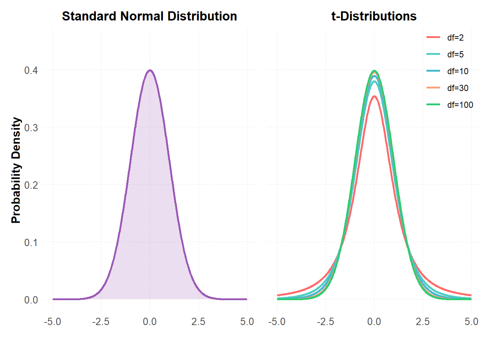
With 98 \(df\), our distribution is already very close to normal, but still slightly wider to account for residual uncertainty.
5.3.3 Critical Regions
Once we understand the shape of the t-distribution and how degrees of freedom affect it, the next question becomes:
How do we decide whether our observed test statistic is “large enough” to reject the null hypothesis?
The answer comes from defining critical regions: parts of the t-distribution that represent values so extreme that they are unlikely to occur if the null hypothesis were true.
A critical region (\(t_\text{crit}\)) is the set of t-values that would lead us to reject the null hypothesis.
It depends on:
- the significance level (\(\alpha\))
- whether the test is one-sided or two-sided,
- and the degrees of freedom (\(df\)).
The significance level is a threshold that determines how much evidence we require before we are willing to reject the null hypothesis. Because we want to limit the chance of falsely declaring a relationship that does not exist, α is usually chosen to be small. Common choices are:
- \(\alpha = 0.01\) (more conservative)
- \(\alpha = 0.05\) (most common)
- \(\alpha = 0.10\) (more lenient)
Choosing \(\alpha = 0.05\) within the context of this example would mean:
“I am willing to tolerate a 5% chance of incorrectly concluding that phone usage affects KOLOR test performance, when in reality the relationship is zero.”
In other words, α controls how strong the evidence must be before we reject \(H_0\).
For a typical two-sided test with \(\alpha=0.05\), \(\frac{\alpha}{2}=0.025\) of the probability lies in the left tail, and 0.025 lies in the right. These two tails form the rejection region. If our observed t-statistic falls in either shaded tail, the data are considered too inconsistent with \(H_0\) to be explained by chance.
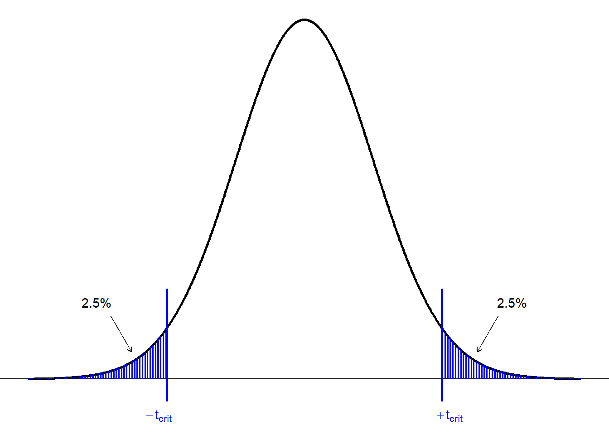
Traditionally, to determine the values for the boundary for the critical region we use the t-tables. These are similar to the Z-tables we saw in Chapter 2. Below is a two-tailed t-table that shows the boundary values (\(\pm t_\text{crit}\)) for different \(df\).
| df | 0.20 | 0.10 | 0.05 | 0.02 | 0.01 | 0.001 |
|---|---|---|---|---|---|---|
| 1 | 3.078 | 6.314 | 12.710 | 31.820 | 63.660 | 636.620 |
| 5 | 1.476 | 2.015 | 2.571 | 3.365 | 4.032 | 6.869 |
| 10 | 1.372 | 1.812 | 2.228 | 2.764 | 3.169 | 4.587 |
| 15 | 1.341 | 1.753 | 2.131 | 2.602 | 2.947 | 4.073 |
| 20 | 1.325 | 1.725 | 2.086 | 2.528 | 2.845 | 3.850 |
| 25 | 1.316 | 1.708 | 2.060 | 2.485 | 2.787 | 3.725 |
| 30 | 1.310 | 1.697 | 2.042 | 2.457 | 2.750 | 3.646 |
| 40 | 1.303 | 1.684 | 2.021 | 2.423 | 2.704 | 3.551 |
| 60 | 1.296 | 1.671 | 2.000 | 2.390 | 2.660 | 3.460 |
| 80 | 1.292 | 1.664 | 1.990 | 2.374 | 2.639 | 3.416 |
| 100 | 1.290 | 1.660 | 1.984 | 2.364 | 2.626 | 3.390 |
| 1000 | 1.282 | 1.646 | 1.962 | 2.330 | 2.581 | 3.300 |
| z | 1.282 | 1.645 | 1.960 | 2.326 | 2.576 | 3.291 |
Recall that we have \(df =98\), so we will use the nearest row in the table (\(df=100\)) to obtain the boundary values. Here (\(\pm t_\text{crit}=1.984\)) for \(\alpha=0.05\). This means that for our current example, the critical t values are:
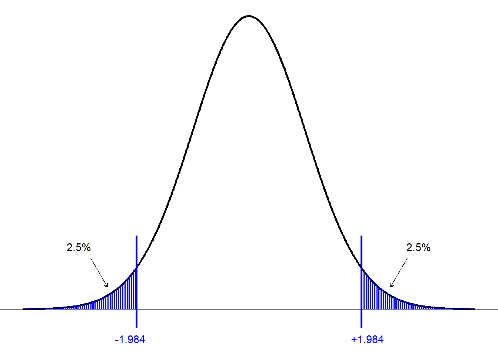
Now, we just need to compute the t-statistic and see whether or not it lays within the critical region for our t-distribution. Recall from the section above that the t-statistic is given by:
\[ t = \frac{\beta_1}{SE(\beta_1)} \]
Mathematically, the values of \(\hat{\beta}_1\) and \(SE(b_1)\) are given by:
\[ \beta_1 = \frac{\sum_{i=1}^n (x_i - \bar{x})(y_i - \bar{y})} {\sum_{i=1}^n (x_i - \bar{x})^2} \]
\[ SE(b_1) = \sqrt{ \frac{ RSS }{ (n-2)\left(\sum x^2 - \frac{(\sum x)^2}{n}\right) } } \]
Where the residual sum of squares (RSS) can be computed with:
\[ RSS = \sum y^2 - b_0\sum y - b_1\sum xy \]
And the intercept \(b_0\) is:
\[ b_0 = \bar{y} - b_1\bar{x} \]
Recall from last week, we learnt how to use software (Excels Data Analysis Tool Pack) to quickly obtain the regression output for a given data set. Suppose the coefficients table for this example looked like:
. | Coefficients | SE | t_stat | P_value |
|---|---|---|---|---|
Intercept | 73.3512 | 2.8629 | 25.62 | 0.00001 |
phone usage | -0.0214 | 0.0137 | -1.56 | 0.12200 |
From this output, we can see that \(\beta_1=-0.0214\) and \(SE(\beta_1)=0.0137\). Therefore:
\[ t = \frac{\beta_1}{SE(\beta_1)}=\frac{-0.0214}{0.0137}=-1.56 \]
Note: Our software usually provides the value of the t-statistic with the coefficient estimates (check that the t-stat column matches this calculation).
With the calculated t-statistic, we can now see if it lies within the critical region:
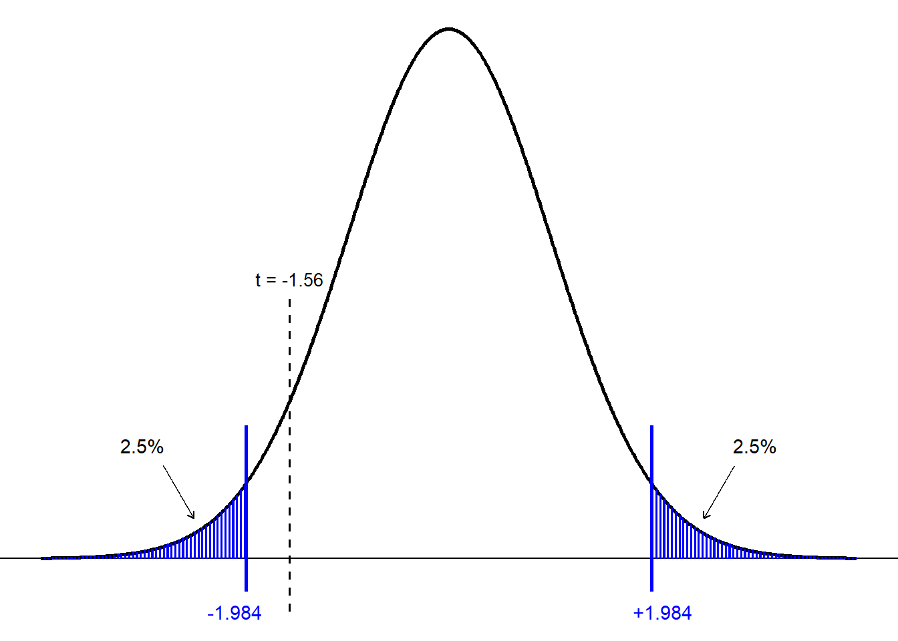
The observed t-statistic of −1.56 does not exceed the critical cut-offs, meaning it is not sufficiently extreme to indicate a real departure from the null hypothesis. In practical terms, the sample does not provide strong enough evidence of an association between phone usage and KOLOR score. In statistics this can also be refereed to as failing to reject the null hypothesis.
Common Misconception: Failing to Reject \(H_0\) Means the Null Is True
It is extremely important to understand what our conclusion does not mean.
When we fail to reject \(H_0\), this does not imply:
- that the null hypothesis is true
- that there is no relationship in the population
- that the alternative hypothesis is false
A non-significant result simply means:
Our sample did not provide strong enough evidence to rule out the null hypothesis.
There are many reasons this can occur:
- the true effect might be small
- the sample size might be too small to detect it
- the data may be noisy
- the observed effect may genuinely be zero
Statistical tests can only evaluate evidence, not truth.
The correct interpretation is therefore:
“We do not have sufficient evidence to conclude that a relationship exists,”
not
“there is no relationship.”
This distinction is central to proper hypothesis testing.
5.4 One-Sided vs Two-Sided Tests
In the example above, we focused on a two-sided test, where evidence in either direction (a positive or negative slope) could lead us to reject the null hypothesis. However, not all research questions are symmetrical like this. Sometimes we are only interested in detecting an effect in one direction—for example, testing whether increased phone usage reduces KOLOR performance, but not whether it improves it. In such situations we use a one-sided test, where the entire significance level α is placed in a single tail of the distribution. One-sided tests are more powerful in the predicted direction, but they must be justified in advance and used carefully, since they will not detect effects in the opposite direction.
In our current scenario, we are interested in whether phone usage predicts KOLOR performance. At this stage, we are not assuming in advance that:
- more phone usage reduces KOLOR score, or
- more phone usage improves KOLOR score.
We simply want to know whether any relationship exists.
A two-sided test evaluates both possibilities. The hypotheses are:
- \(H_0:\beta_1=0\) (no relationship between phone usage and KOLOR score)
- \(H_1:\beta_1\ne0\) (a relationship between phone usage and KOLOR score exists)
Because both directions (positive or negative slope) count as evidence against the null, the critical region is split between the two tails of the t-distribution.
A one-sided test is used when the research question predicts a specific direction of effect before looking at the data.
In our context, this would require believing—in advance—that:
More phone usage will definitely reduce KOLOR performance (but not improve it).
In that case, we might set up a lower-tailed test:
- \(H_0:\beta_1≥0\)
- \(H_1:\beta_1<0\)
Here, only negative slopes count as evidence against the null. The entire 5% significance level is placed in the left tail of the t-distribution.
Using the critical values for this scenario (with \(\alpha=0.05\) and \(df=98\)), the t-distributions can be visualised as:
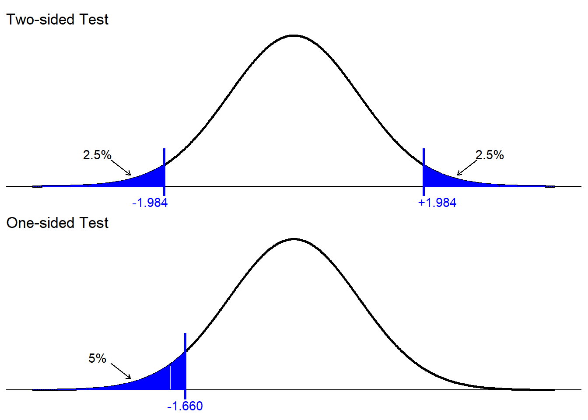
5.4.1 Choosing between two-sided or one-sided test
A simple guide:
- Use a two-sided test when:
- you do not have a justified directional hypothesis
- the consequences of missing an effect in the opposite direction are important
- Use a one-sided test when:
- theory or prior evidence strongly predicts the direction
- the opposite direction is either impossible or irrelevant
- you specify the direction before collecting or analysing data
In practice, most introductory statistical analyses rely on two-sided tests unless there is a clear and defensible reason to choose otherwise.
5.5 The p-value
So far we have introduced the idea of critical regions, where we compare the observed test statistic against fixed cut-offs such as ±1.984. This approach works well, but it leads to an obvious question:
How “unlikely” is our observed test statistic if the null hypothesis were really true?
The p-value answers exactly this question.
Formally, the p-value is: The probability of obtaining a test statistic as extreme as (or more extreme than) the one we observed, assuming the null hypothesis is true.
In other words:
- Pretend \(H_0\) is true (the slope is really 0).
- Look at the t-distribution that describes what values of the test statistic we would expect just from random sampling.
- Ask: How far out in the tails does our observed t-value sit?
The more extreme the observed t-value, the smaller the p-value.
Given this definition of a p-value, let’s interpret it in the context of our study examining whether phone usage predicts KOLOR scores.
- Pretend \(H_0\) is true (that phone usage has no effect on KOLOR score).
- Look at the t-distribution (above) for this scenario
- A t-value of –1.56 sits comfortably inside the main body of the distribution. It is not close to the extreme tail areas beyond ±1.984 that would count as “surprising” if the true slope were zero.
In practical terms:
- A t-value of this size is quite plausible even if phone usage and KOLOR score are unrelated.
- It does not represent strong evidence that the slope differs from zero.
Because the observed t-value is not extreme, the p-value will be relatively large — greater than 0.05. A large p-value means the data are compatible with there being no real relationship between phone usage and KOLOR test performance in the population. We can inspect our Coefficients table from earlier to see what the p-value is.
. | Coefficients | SE | t_stat | P_value |
|---|---|---|---|---|
Intercept | 73.3512 | 2.8629 | 25.62 | 0.00001 |
phone usage | -0.0214 | 0.0137 | -1.56 | 0.12200 |
If we read across the phone usage row, we can see that it’s corresponding p-value is 0.1220. We can interpret this as:
If phone usage truly had no effect on KOLOR performance (i.e., if the real slope were 0), then a t-statistic as extreme as –1.56 would occur about 12.2% of the time purely by chance.
The shaded red area in the figure below reflects this p-value of 0.1220 (~ 0.061 within each tail). Twelve percent is not particularly rare. It is well above our usual threshold of 5% for deciding whether a result is surprising enough to reject the null hypothesis.
This tells us that the negative slope we observed in our sample, suggesting that students who used their phones more tended to perform slightly worse on the KOLOR test, is not strong enough evidence to conclude that such a relationship exists in the population.
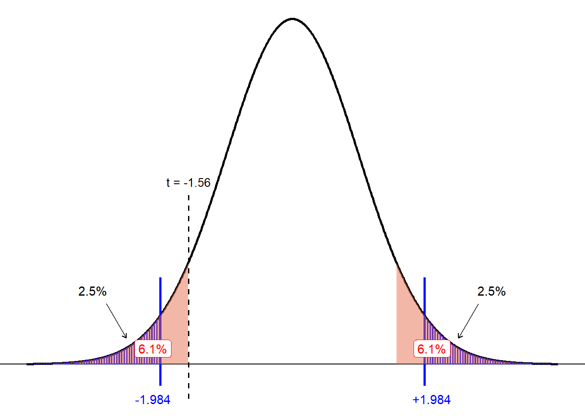
Nothing Special About 0.05
It is easy to assume that α = 0.05 is some universal rule of science. In reality, there is nothing magical about the number 0.05. The value 0.05 became popular largely through historical convention, not because it represents a scientifically optimal threshold. Different fields, and even different studies within the same field, may sensibly choose different significance levels.
Examples:
- Medical trials often use α = 0.01 to reduce the risk of false positives.
- Early exploratory research may use α = 0.10 to avoid missing potential effects.
- Large datasets may justify even more stringent thresholds (e.g., α = 0.001).
The choice of α should reflect the context, the consequences of errors, and the goals of the analysis, not a rigid rule.
The key idea is this:
Statistical significance depends on the chosen α.
It is a decision threshold, not a law of nature.
5.6 Significant results
In the previous section we saw what it means to explore data where we cannot reject \(H_0\) (i.e. our results are not statistically significant). Let us now change the data slightly. Suppose we did the KOLOR test for a different set of 100 students from ETC1000 (e.g. from a different tutorial). The panel on the left is from the original class, and the panel on the right is from the new class:
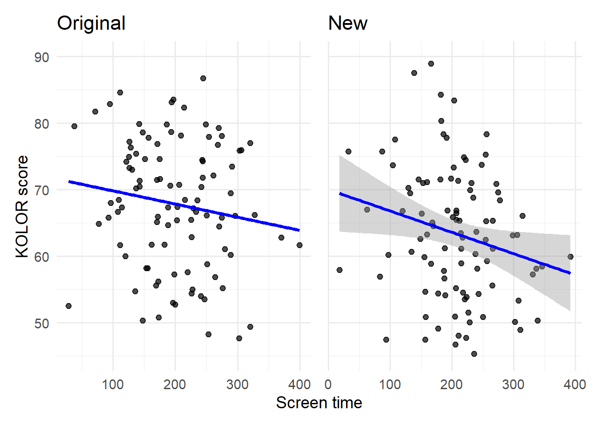
The slopes from both plots look quite similar, albeit the new plot appears to have a slightly steeper slope. Let’s now have a look at the regression table to see if this changes our interpretation:
. | Coefficients | SE | t_stat | P_value |
|---|---|---|---|---|
Intercept | 69.967 | 3.329 | 21.016 | 0.00001 |
phone usage | -0.035 | 0.153 | -2.274 | 0.02510 |
Notice here that the t-statistic is -2.274. If we were to visualise this on the same t-distribution from earlier (with the same critical regions of \(\pm1.984\)), then this would show:
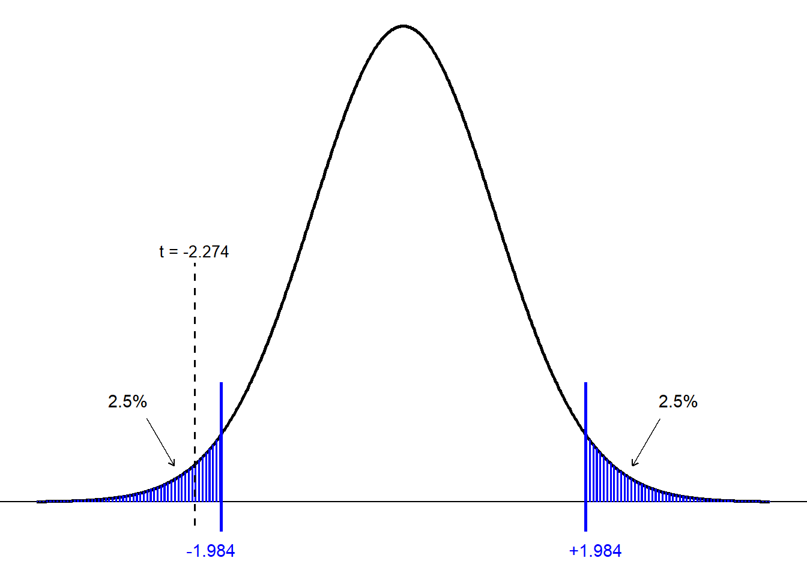
From the plot above, we can see that the t-statistic of \(t=-2.274\) lays within the critical region. Therefore, we reject the null hypothesis and conclude that there is statistically significant evidence of a relationship between phone usage and KOLOR score.
Likewise, we could have also used the p-value from our regression output as well:
. | Coefficients | SE | t_stat | P_value |
|---|---|---|---|---|
Intercept | 69.967 | 3.329 | 21.016 | 0.00001 |
phone usage | -0.035 | 0.153 | -2.274 | 0.02510 |
Here, the p-value is 0.0251, which is less than the significance level of 0.05. This provides us with the same conclusion as above (i.e. reject the null hypothesis).
We can reject \(H_0\) because the p-value 0.025 is less than the significance level \(\alpha\) 0.05
Visually, if the p-value is 0.0251, then within each tail, the probability is \(\frac{0.0251}{2}=0.0126\), which we can see is beyond the critical region as well:
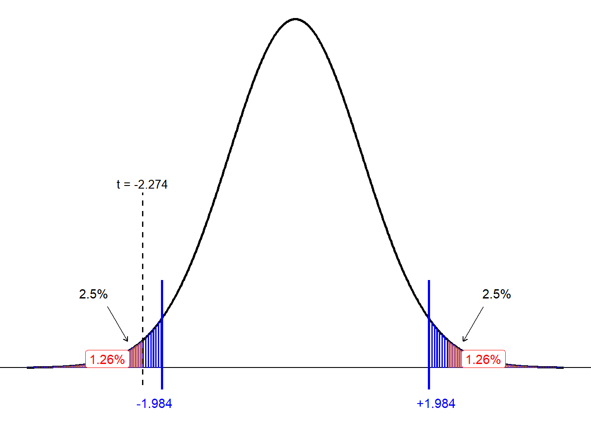
5.7 Confidence Intervals
Up to this point, we have focused on hypothesis tests and p-values as methods for deciding whether an estimated effect is statistically significant. However, there is another powerful and intuitive approach:
Using confidence intervals to assess whether an effect is compatible with zero.
A confidence interval (CI) provides a range of plausible values for the true parameter—in our case, the true regression slope describing the relationship between phone usage and KOLOR performance. For a two-tailed hypothesis test at the 5% significance level, the decision rule using confidence intervals is simple:
- If the 95% confidence interval for the slope does not include zero, reject \(H_0\)
- If the interval does include zero, fail to reject \(H_0\)
This works because the critical values used to construct a 95% CI (±1.984 for df = 98) are the same critical values used in the α = 0.05 hypothesis test (see 5.3.3). Thus, CIs and hypothesis tests are mathematically equivalent — they will always lead to the same conclusion when the confidence level and significance level match.
We saw how to compute the CIs for the sample mean back in Chapter 3 (see 3.7). The formula to construct CIs for regression slopes is very similar:
\[\beta \pm t_\text{crit} \times \frac{\sigma}{\sqrt{n}}\]
where \(\frac{\sigma}{\sqrt{n}}=SE\)
This is useful because regression output typically comes with the \(SE\) reported. See the examples below.
We will use the output below to compute the CIs:
. | Coefficients | SE | t_stat | P_value |
|---|---|---|---|---|
Intercept | 73.3512 | 2.8629 | 25.62 | 0.00001 |
phone usage | -0.0214 | 0.0137 | -1.56 | 0.12200 |
\[ \begin{aligned} CI &= -0.0214 \pm 1.984 \times 0.0137 \\ &= -0.0214 \pm 0.02717 \\ &= [-0.0486,\; 0.0058] \end{aligned} \]
And, if we plot these on a number line we can see that this 95% CI does capture 0:
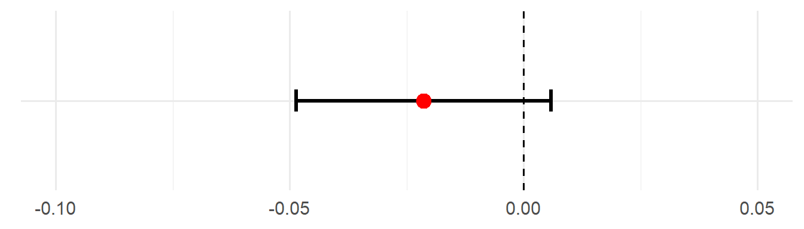
This means that we fail to reject \(H_0\) and conclude that there is no significant relationship between phone usage and KOLOR performance.
We will use the output below to compute the CIs:
. | Coefficients | SE | t_stat | P_value |
|---|---|---|---|---|
Intercept | 69.967 | 3.329 | 21.016 | 0.00001 |
phone usage | -0.035 | 0.153 | -2.274 | 0.02510 |
\[ \begin{aligned} CI &= -0.035 \pm 1.984 \times 0.0153 \\ &= -0.035 \pm 0.0304 \\ &= [-0.0654,\; -.0046] \end{aligned} \]
And, if we plot these on a number line we can see that this 95% CI does not capture 0:
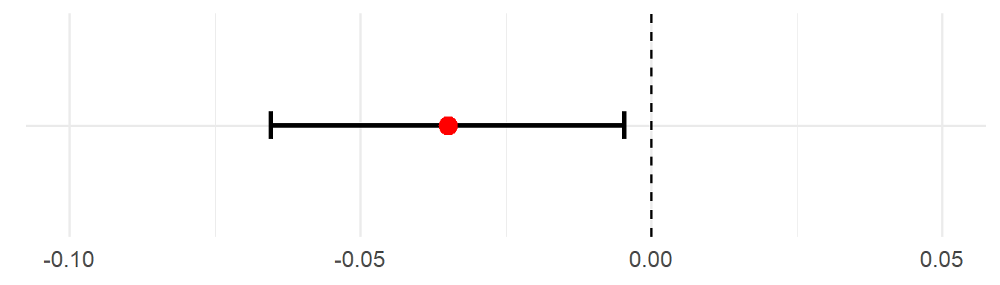
This means that we reject \(H_0\) and conclude that there is a significant relationship between phone usage and KOLOR performance.
5.8 Summary
In this chapter, we moved from building regression models to evaluating them. While previous chapters focused on estimating relationships from data, the central question here was:
Is an observed relationship real, or could it simply be due to random chance?
To answer this, we introduced the framework of hypothesis testing and applied it to regression models.
We began by defining null and alternative hypotheses, where the null hypothesis represents the idea of no effect (e.g. a regression slope of zero), and the alternative represents the presence of a relationship. Hypothesis testing works by assuming the null hypothesis is true and then assessing how compatible our observed data are with that assumption.
We then introduced the t-statistic, which measures how far an estimated regression coefficient lies from zero in standard-error units. This statistic is compared against a t-distribution, whose shape depends on the degrees of freedom, to account for uncertainty introduced by estimating model parameters from data.
Using the t-distribution, we explored three equivalent decision-making approaches:
- Critical regions, where we compare the test statistic to fixed cut-off values (such as ±1.984 at the 5% level), and
- p-values, which quantify how likely it would be to observe a result as extreme as ours if the null hypothesis were true.
We emphasised that a small p-value indicates strong evidence against the null hypothesis, while a large p-value means the data are consistent with no effect. Importantly, failing to reject the null hypothesis does not prove it is true—it simply means the sample does not provide strong enough evidence.
We also distinguished between two-sided tests, which look for effects in either direction, and one-sided tests, which focus on a specific direction and must be justified before analysing the data.
Finally, we introduced confidence intervals as an alternative and often more informative way to assess results. Confidence intervals provide a range of plausible values for the true regression coefficient and lead to the same conclusions as hypothesis tests when the confidence level and significance level match. Unlike p-values alone, confidence intervals also convey the size and uncertainty of an effect.
5.9 Exercises
Question 1
Explain the difference between a null hypothesis and an alternative hypothesis. Why do we assume the null is true until proven otherwise?
Click for Solutions
- Null hypothesis \(H_0\): A statement of no effect, no difference, or status quo.
- Alternative hypothesis \(H_1\): A statement representing the presence of an effect or difference.
We assume the null is true because it provides a baseline comparison, it avoids claiming an effect without sufficient evidence, and hypothesis testing is framed similarly to the justice system: assume no effect until evidence suggests otherwise.
Question 2
Researchers want to understand whether daily phone usage affects students’ exam performance. The university claims that phone usage has no effect on exam performance.
You believe that phone usage does affect performance (it could increase or decrease scores).
Write the hypotheses, where the university’s claim is the null and your belief is the alternative.
Is this a one- or two-sided test?
Click for Solutions
\(H_0: \beta_1 = 0\)
(Phone usage has no effect on exam performance)\(H_1: \beta_1 \ne 0\)
(Phone usage does affect performance)
This is a two-sided test, because we are testing for any effect (positive or negative).
Question 3
A regression model gives the estimate for “hours on TikTok” on exam score:
- \(\beta = -1.8\)
- p-value = 0.030
Interpret these estimates. Use \(\alpha=0.05\).
Click for Solutions
Every additional hour spent on TikTok is associated with a 1.8-point decrease in exam score, on average, and this is statistically significant (p = .030).
Question 4
Suppose we fit a simple linear regression model to predict \(y\) from a single predictor \(x\). When testing whether \(x\) is a significant predictor — that is, testing
- \(H_0:\beta = 0\)
- \(H_0:\beta \ne 0\),
the output gives a t-statistic of 2.57. At the 5% significance level, the corresponding t-critical value is 1.65.
Based on this information, what conclusion should we draw about the null hypothesis?
Click for Solutions
Since \(|t|=2.57>t_{crit}=1.65\), we can reject the null hypothesis.
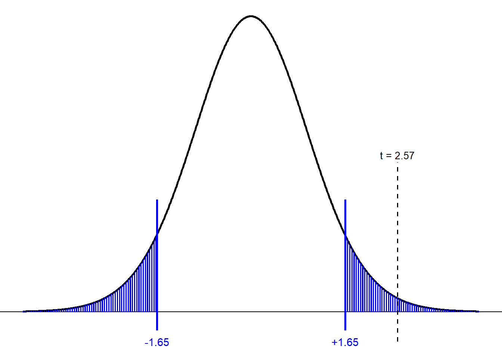
Question 5
Engineers and consumers are often interested in understanding what factors influence a car’s fuel efficiency. In this exercise, we will explore how three key characteristics relate to fuel consumption:
- wt: the weight of the car (in 1000 lbs)
- hp: engine horsepower
- qsec: time required to travel a quarter mile (in seconds)
Researchers are interested in whether these variables help explain variation in fuel efficiency using the multiple regression model:
\[mpg=\beta_0+\beta_1(wt)+\beta_2(hp)+\beta_3(qsec)\] Suppose the regression output looks like:
. | Coefficients | SE | t_stat | P_value |
|---|---|---|---|---|
Intercept | 27.611 | 8.419 | 3.279 | 0.00300 |
wt | -4.359 | 0.753 | -5.791 | 0.00001 |
hp | -0.018 | 0.015 | -1.190 | 0.24400 |
qsec | 0.511 | 0.439 | 1.163 | 0.25500 |
- Write the fitted regression equation for this scenario.
- Which variables are statistically significant in this model? Let \(\alpha=0.05\)
- Write a short paragraph that summaries the findings.
Click for Solutions
- \(mpg=27.611-4.359(wt)-0.018(hp)+0.511(qsec)\)
- Only wt is statistically significant (p = .00001)
- In this multiple regression model, car weight is the only strong and statistically significant predictor of fuel efficiency. Heavier cars get substantially lower mpg, even after accounting for horsepower and acceleration. Horsepower and quarter-mile time show weak relationships with mpg and are not statistically significant in this model. This suggests that weight is the dominant factor influencing fuel economy among the variables considered.
Question 6
A researcher investigates whether daily screen time (hours) predicts students’ exam scores.
The regression output for the slope coefficient \(\beta_1\) is:
| Term | Estimate | SE |
|---|---|---|
| Screen time | \(-1.80\) | \(0.72\) |
Using this output, compute the 95% confidence interval for \(\beta_1\). (Use the normal approximation with critical value \(1.96\).)
Does your CI provide evidence that there is a statistically significant finding?
Click for Solutions
\[ \begin{aligned} CI &= -1.80 \pm 1.96 \times 0.72 \\ &= -1.80 \pm 1.41 \\ &= [-3.21,\; -0.39] \end{aligned} \]
Because the 95% CI does not capture 0, we can reject \(H_0\) and conclude that there is a significant relationship between daily screen time and exam scores. (specifically, more screen time tends to reduce exam score)
Question 7
Download the file below and open it in Excel.
This workbook contains data collected from 200 employees, and relates to their wage (per 100,000), age and years of education.
- Create scatterplots to explore the relationship between (i) wage and age, and (ii) wage and years of education.
- Run a simple linear regression model to predict wage using only age as a predictor. Interpret the beta coefficient and p-value for this model.
- Run a simple linear regression model to predict wage using only education as a predictor. Interpret the beta coefficient and p-value for this model.
- Run a multiple regression model with both age and education as predictors. Interpret the beta coefficients and p-values for this model.
Click for Solutions
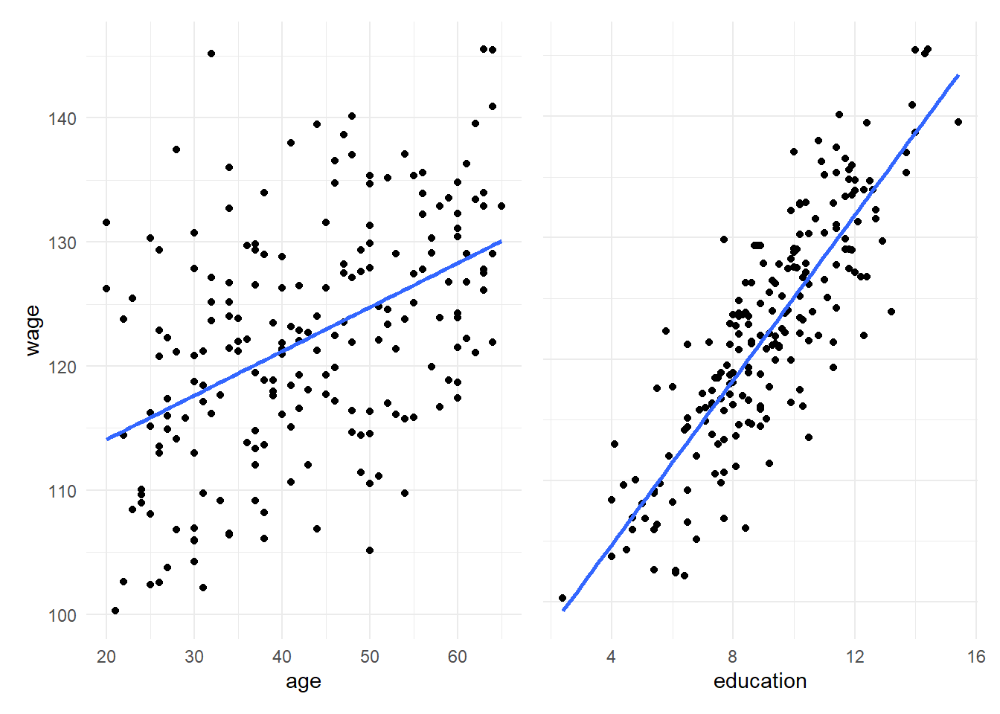
The estimated slope for age is 0.356. This means that, on average, each additional year of age is associated with an increase of approximately $0.36 in hourly wage. The p-value is less than the significance level (using \(\alpha=0.05\)). We conclude that age is a statistically significant predictor of wage in this simple regression model.
The estimated slope for years of education is 3.40. This indicates that each additional year of education is associated with an increase of approximately $3.40 in hourly wage, on average. The p-value is less than the significance level (using \(\alpha=0.05\)). We conclude that years of eduction is a statistically significant predictor of wage in this simple regression model.
- Holding age constant, each additional year of education is associated with an increase of approximately $3.54 in hourly wage, and this is statistically significant.
- Holding education constant, each additional year of age is associated with a decrease of 0.045, however this is not statistically significant.
Question 8
This question continues from Question 7 above. Look at the output you created for parts b to d (i.e. the 3 regression models) and answer the following questions.
- How does the estimated effect of age change when years of education is included in the model?
- Provide a statistical explanation for why this change occurs.
- What does this tell us about the relationship between age, education, and wage?
Click for Solutions
- In the simple regression model, age has a positive and statistically significant effect on wage. However, once years of education is included in the multiple regression model, the estimated effect of age becomes close to zero and statistically insignificant. This indicates that age no longer explains additional variation in wages after controlling for education.
- This change occurs because age and years of education are correlated. In the simple regression, age captures not only its own effect but also part of the effect of education on wages. When education is omitted, this leads to omitted variable bias in the estimated age coefficient. Including education in the model isolates the direct effect of each variable, revealing that the apparent effect of age was driven by its association with education.
- This suggests that education is the primary driver of wage differences, while age has little independent effect once education is taken into account. The observed relationship between age and wage in the simple model reflects the fact that older individuals tend to have higher levels of education, which in turn leads to higher wages. Thus, education mediates the relationship between age and wage.